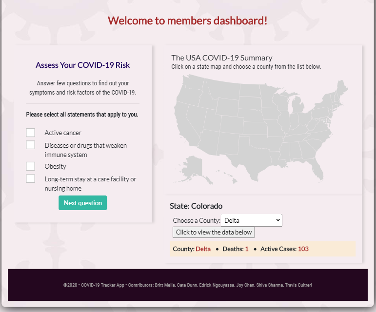
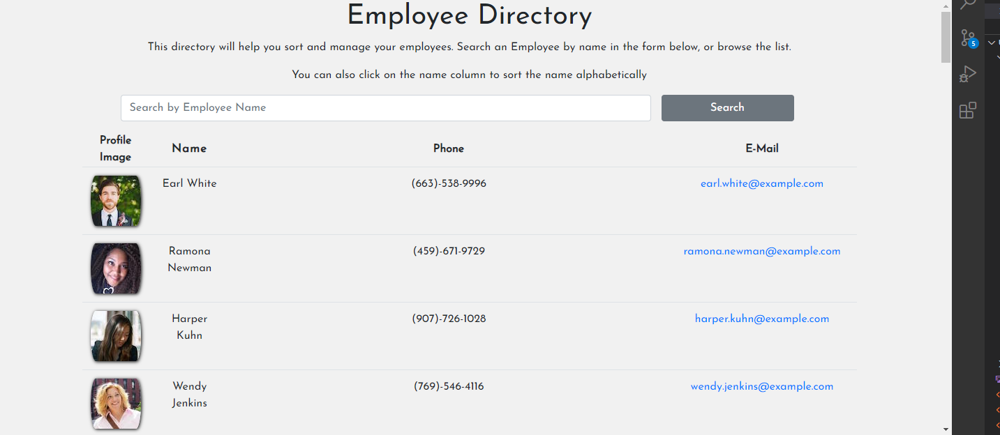
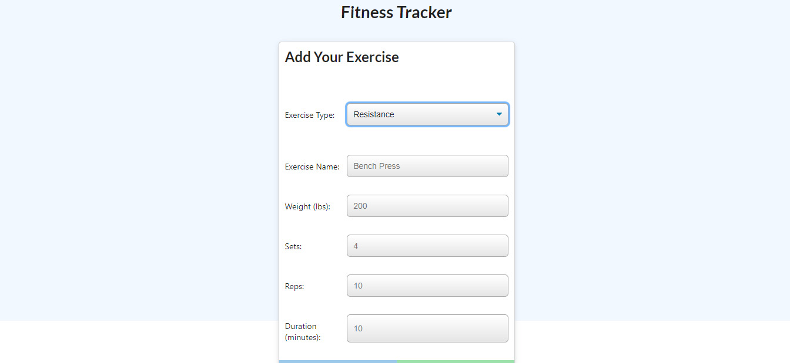

View some of my favorite projects and homework assignments I've created. Also visit my Github to see more.
 Project 3: This project was our final group one that entailed us using everything we had learned throughout the year. We decided on creating an Covid-19 Tracker and Symptom Checker. It was created using React and Javascript to track current locations of outbreaks, engage an questionnaire to determine if you have Covid-19, as well as up to date news articles pertaining to Covid-19. Users would create logins and have a custom profile so they could track Covid-19 cases, as well as, store information from earlier questionnaire fill outs. Users could track cases nationally, by state, and county. The questionnaire is the recommended evaluatory questions for suspected Covid-19 patients. The application is able to track cases through the Corona Azure API which is projected onto the United States React Map to physically show you the location of your query.
 Employee Directory: This application was our first use of React about a week after learning it. The purpose was an employee directory that would allow you to manage employee files with their name, phone number, email address, and a profile image. The application was designed to show our ability to manage component states, while responding to user events and queries to show our comprehension with the applications UI.
 Excercise Tracker: The Exercise Tracker Application was created with MongoDB and Mongoose Schema and handle routes using Express.js. The application is used by logging and tracking cardio and resistance workouts. Selecting resistance training will allow you to track name, type, amount of weight, amount of sets, amount of reps, and the total time spent working out. Cardio training allows you to track your distance traveled over a certain time period. The applications use of MongoDB will store your workouts so you can continue or add to them at a different time.